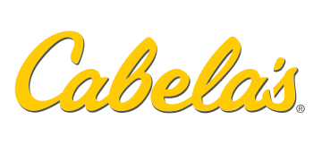
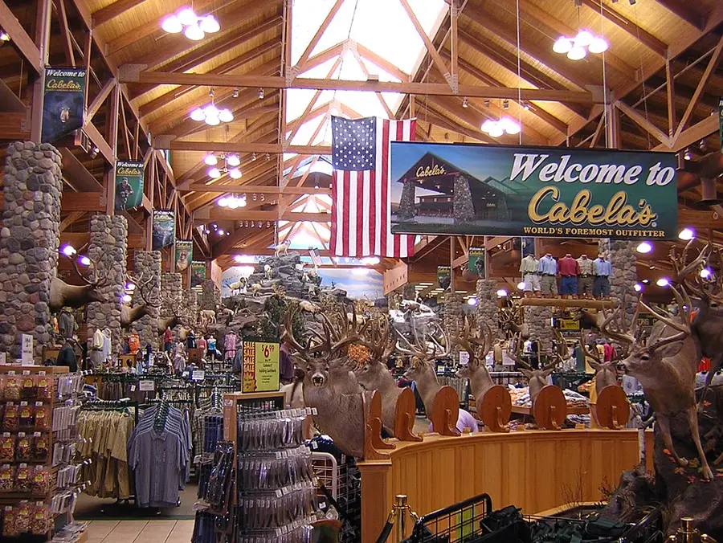

대표 로고대표 브랜드 마크
대표 로고대표 브랜드 마크카벨라스 Cabela's
카벨라스(Cabela's)는 사냥·낚시·캠핑 등 아웃도어 레크리에이션 용품을 판매하는 미국 소매업체이다.
최종 업데이트
카벨라스는 어떤 브랜드인가
카벨라스는 사냥·낚시·캠핑을 아우르는 미국 대표 아웃도어 용품 소매 기업으로, 1961년 12월 네브래스카주 채플에서 딕 카벨라가 통신판매로 출발했다. 1991년 사이드니 대형 매장으로 체험형 리테일 시대를 열었고, 2004년 뉴욕증시 상장, 2017년 배스프로숍스에 약 50억 달러 규모로 인수되며 두 차례의 결정적 전환점을 거쳤다.
현재 49개 안팎의 카벨라스 브랜드 매장이 운영된다.
카벨라스는 어떻게 봐야 할까
카벨라스의 본질은 매장을 목적지로 만든 데스티네이션 리테일 전략에 있다. 6만 갤런 규모의 대형 수족관, 박제 동물로 채운 보존산(Conservation Mountain) 디오라마, 수만 제곱피트의 매장은 단순 판매장이 아니라 관광 명소로 기능했고, 사이드니 플래그십은 연 100만 명 이상을 끌어모았다.
이는 아웃도어를 미국적 생활방식이자 문화로 제시하며 가격이 아닌 경험과 전문성으로 충성도를 쌓는 차별화였다. 카탈로그 통신판매에서 출발해 매장 체험으로 확장한 옴니채널 진화는, 온라인 직구와 체험형 매장 사이에서 고민하는 한국 아웃도어·리테일 시장에도 시사하는 바가 크다.
배스프로숍스와의 결합은 사냥(카벨라스)·낚시(배스프로)·보팅(화이트리버) 강자를 한 지붕에 묶어 북미 최대 아웃도어 진영을 형성했다.
카벨라스는 어떻게 시작되고 성장했나
제2차 세계대전 이후 미국 중서부의 사냥·낚시 인구 확대를 배경으로, 1961년 딕 카벨라는 시카고 가구 박람회에서 45달러어치 낚시 제물낚시를 사들여 지역 신문에 광고했다. 첫 광고는 거의 반응이 없었으나 전국지 스포츠 어필드 광고가 성공하면서 사업이 본격화됐다.
아내 메리, 동생 짐이 합류해 주방과 가족 상점 지하에서 주문을 처리했고, 등사판 전단은 정식 카탈로그로 발전했다. 1963년 무렵 사이드니로 본거지를 옮겨 통신판매 제국의 기틀을 다졌다.
첫 전환점은 1987년 네브래스카주 커니의 첫 직영 매장과 1991년 7만5천 제곱피트 사이드니 플래그십으로 이어진 체험형 매장 전략이었고, 두 번째 전환점은 2004년 뉴욕증시 상장으로 약 1억5천6백만 달러를 조달해 신규 점포 확장과 부채 정리에 투입한 일이다.
카벨라스의 브랜드 아이덴티티는 무엇인가
카벨라스는 스스로를 '세계 최고의 아웃도어 공급자(World's Foremost Outfitter)'로 규정하며 진정성·전문성·자연 보존을 핵심 가치로 내세운다. 비주얼 아이덴티티는 짙은 녹색과 카무플라주(위장무늬), 야생 자연을 환기하는 로고와 매장 내 박제·디오라마로 구현돼 매장 자체가 브랜드 서사가 된다.
타깃은 사냥꾼·낚시인·캠퍼 등 진지한 아웃도어 애호가이며, 보이스는 실용적이고 전문적이면서 가족 단위 방문객까지 끌어안는 따뜻한 톤을 유지한다.
카벨라스의 대표 제품과 서비스는 무엇인가
사냥용 총기·탄약, 낚시 장비, 캠핑·보팅 용품, 아웃도어 의류·신발과 위장복, 옵틱·내비게이션 기기, 야외 조리·식품, 각종 액세서리를 폭넓게 취급한다. 자체 브랜드 제품 비중이 높아 마진과 차별성을 확보하며, 대형 체험형 직영 매장과 카탈로그 통신판매, 온라인 커머스를 결합한 옴니채널로 판매하고 사냥·낚시 면허 발급과 사격장 같은 부대 서비스도 운영한다.
카벨라스는 지금 어떤 상태인가
본사는 네브래스카주 사이드니에 연고를 둔 카벨라스 브랜드로 운영되며, 2017년 인수 이후 배스프로숍스 창업자 조니 모리스가 이끄는 비공개 지주사 그레이트 아메리칸 아웃도어스 그룹(Great American Outdoors Group) 산하 자회사로 편입됐다. 국가는 미국이며, 다수 매장이 배스프로숍스로 전환된 가운데 49개 안팎이 카벨라스 브랜드로 영업 중이다.
한국 내 공식 직영 매장 진출 여부는 미공개다.
카벨라스 로고는 어떻게 변해왔나
대표 로고대표 브랜드 마크
대표 로고 1보관 이미지 1사진으로 보는 카벨라스의 역사

자주 묻는 질문
카벨라스는 어느 나라 브랜드인가요?
카벨라스는 미국의 스포츠·아웃도어 브랜드입니다.
카벨라스는 언제 설립되었나요?
카벨라스는 1961년 설립되었습니다.
카벨라스의 브랜드 아이덴티티는 무엇인가요?
카벨라스는 스스로를 '세계 최고의 아웃도어 공급자(World's Foremost Outfitter)'로 규정하며 진정성·전문성·자연 보존을 핵심 가치로 내세운다.
카벨라스의 대표 제품은 무엇인가요?
사냥용 총기·탄약, 낚시 장비, 캠핑·보팅 용품, 아웃도어 의류·신발과 위장복, 옵틱·내비게이션 기기, 야외 조리·식품, 각종 액세서리를 폭넓게 취급한다.
카벨라스의 본사는 어디에 있나요?
본사는 네브래스카주 사이드니에 연고를 둔 카벨라스 브랜드로 운영되며, 2017년 인수 이후 배스프로숍스 창업자 조니 모리스가 이끄는 비공개 지주사 그레이트 아메리칸 아웃도어스 그룹(Great American Outdoors Group) 산하 자회사로 편입됐다.
카벨라스의 창업자는 누구인가요?
카벨라스의 창업자는 Richard N. Cabela입니다(위키데이터 기준).
카벨라스의 공식 웹사이트는 어디인가요?
카벨라스의 공식 웹사이트는 https://www.cabelas.com/ 입니다.
출처와 검증
카벨라스 관련 참고: 공식 웹사이트 · 위키데이터 Q2793714 · 영어 위키백과. 브랜드명은 한글과 원어를 함께 표기하되 데이터에 없는 표기는 만들지 않습니다. 기원 국가·설립연도는 검수된 정의문에서 확인된 값을 우선하고, 없을 때만 공식 웹사이트 URL이 일치하는 위키데이터 개체의 값을 씁니다. 탄생일의 월·일은 위키데이터, 위키백과 정보상자, 본문 가운데 같은 연월로 확인되는 값만 싣고, 출처끼리 다르면 싣지 않습니다. 웹 첫 보관은 인터넷 아카이브가 공식 사이트 첫 화면을 처음 보관한 날로, 사이트 개설일과 다를 수 있습니다. 위키데이터 값은 2026-09-07 기준입니다.